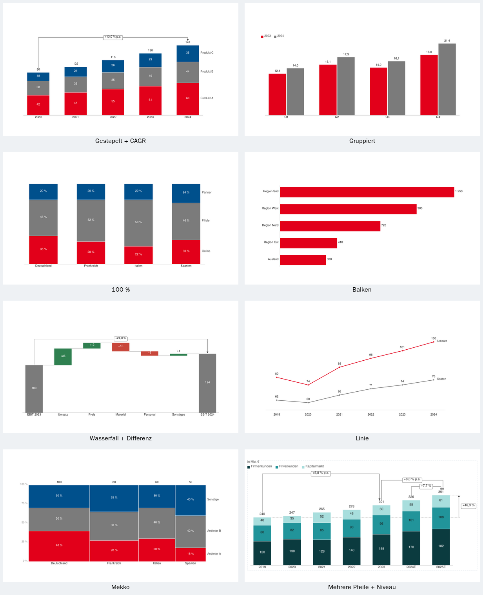

PowerPoint-Add-in für Diagramme im Beratungsstil: Datenblatt wie Excel, automatische CAGR- und Differenzpfeile, Wasserfall, Mekko.
mkdir -p ~/Library/Containers/com.microsoft.Powerpoint/Data/Documents/wef curl -fsSL https://larschristianvogel-ops.github.io/chartwerk/manifest.xml \ -o ~/Library/Containers/com.microsoft.Powerpoint/Data/Documents/wef/chartwerk.xml
